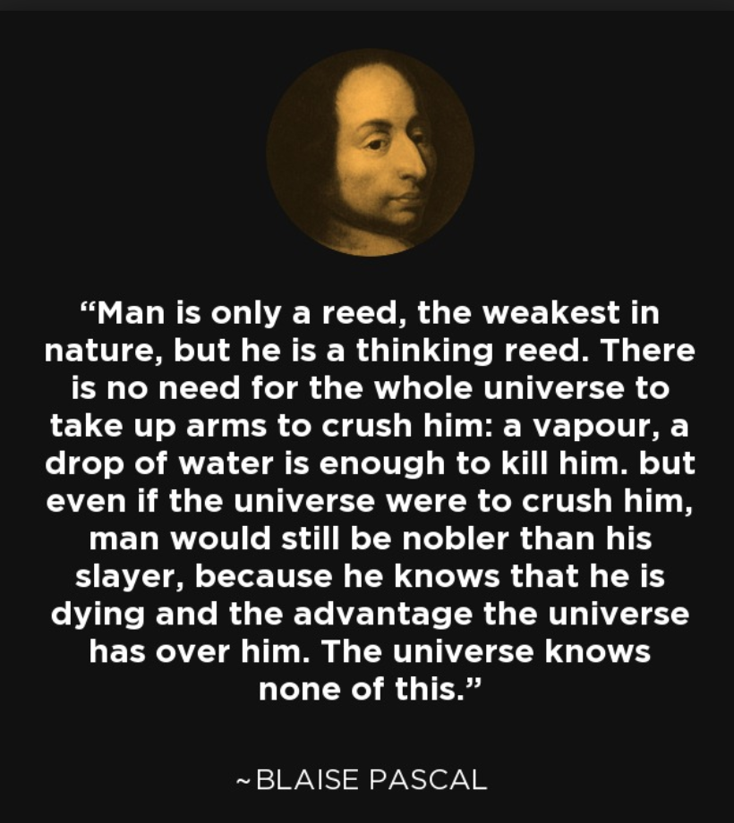

Mar 21, 2018

勇气很重要，这些年来我看到很多人——其实大家都有着差不多的智商，接受着差不多的教育，但是大家的轨迹却不尽相同，我可能是其中过得还行的那一个。我觉得很重要的一点就是，在很多时候我比较勇敢，在发现机会之后愿意主动抓住这些机会。勇气有很多种，此时在我脑海里盘旋的一种勇气叫做直面过去的勇气。比如说，像很多人一样，我也搭过很多次博客，而且每次都因为各种各样的原因而停止了。其中一个重要的原因就是没有勇气直视自己从前写下的文字，觉得幼稚，觉得愚蠢，觉得暴露了这些从前的文字让自己感到羞耻。不过现在的我更倾向于留下这些文字作为记录，过去的幼稚不应该成为一种羞耻，我想记住那个幼稚的自己。更何况，世界上还有许许多多的人，他们正处于我从前的那个幼稚的水平，或者正朝着我眼中所谓的幼稚水平前进，我希望我能用这种方式帮助他们。
-- 17:59, February 21, 2020老师让我总结一下我的Master申请，我想了一两分钟，然后说：
从实力来说，我觉得自己很强；从申请材料来看，我觉得自己很弱；从申请结果来说，我觉得自己很幸运；从努力程度来说，我觉得我真的挺一般的。
当时想着自己回复得太着急了，深思熟虑一下应该能想出更好的回复的，但是当冷静下来之后，却感觉这四条似乎也算是完整地概括了我的申请季了吧 ;)
-- 20:48, April 19, 2018> A number of these phenomena have been bundled under the name "Software Engineering". As economics is known as "The Miserable Science", software engineering should be known as "The Doomed Discipline", doomed because it cannot even approach its goal since its goal is self-contradictory. Software engineering, of course, presents itself as another worthy cause, but that is eyewash: if you carefully read its literature and analyse what its devotees actually do, you will discover that software engineering has accepted as its charter "How to program if you cannot.". -- Dijkstra
我的本科实行计算机大类的制度，简而言之，大一上学期到大二上学期大家都没有明确的专业，都叫做计算机大类，等到大二上学期结束，大家就会开始选择自己的专业：计算机科学，软件工程或者网络工程。当年的我觉得自己真是好喜欢写代码啊，软件工程这个专业一听就是写代码的吧（然而我连培养方案都没认真看懂），于是我毫不犹豫地选择了软件工程专业。现在临近毕业之际，看到Dijkstra的言论真是哑然失笑，他说软件工程是穷途末路的领域，其本质可以总结为How to program if you cannot。他的言论解答了我大三时的困惑，当时我在上“软件工程经济学”，“软件项目管理”等课程的时候就会觉得，wtf我为什么要上这些东西。这种东西根本就没什么好教的，好的程序员之间就是会互相合作的，你动用各种方法去强迫他们是很可悲的。这个观点被我后来在网上看到的抱怨所验证，像敏捷开发scrum这种东西，在中国的业界成为了压榨程序员的一种手段。
个人来说，我觉得软件工程在现实中的语义可以概括为：如何高效地驱使一群平庸的程序员在一起合作并产生最大的效益值<del>，手段往往是残酷的</del> :)
-- 00:36, April 8, 2018有些人到了自己人生的某个阶段（e.g.20岁）就会开始觉醒，认识到自己与不同阶级同龄人的差距，并感叹自己之前的人生过得多么“不懂事”，其实很多时候，这种事都无法改变。简而言之，当你还小还没有能力没有经验站在一个高度为自己写下一个十年二十年计划的时候，你的父母是唯一能为你做这些事的人，如果他们没有做，那么你的人生就会过得非常随机。随机的意思是，你20岁之前的人生会轻易地被一些事所改变，你所遇见的朋友、老师、恋人，会在很大程度上左右你的人生，而年幼的你并不知道如何去遇见更好的人，或者甚至无法分辨什么才算是好。从系统的角度来看，这一点也不Robust :)
> There is only one heroism in the world: to see the world as it is, and to love it. -- Romain Rolland
-- 10:50, March 24, 2018曾经我以为编程能力就是一切，写得一手好代码就可以在这世界上赢得很多的尊重，曾经是指在我大二大三的时候；后来我失望地觉得编程能力只是一个微不足道的东西，因为人们更倾向于用可标化的东西来衡量你，GPA、TOEFL、GRE、Paper...我觉得我都还没有得到展示我自己所谓编程能力的机会，就被拒绝了，后来指的是我在准备申请Master的那段时间；如今我认为我终于正视了这一切，编程既谈不上多么高贵，也说不上多么卑微，它只是一个普通的技能，和木工、电工、摄影、厨艺都没有什么区别。我对它有过的热情以及失望，都来源于我对它的迷恋，而这本质上和爱上一个小姑娘并没有什么区别 :)
-- 21:30, March 7, 2018